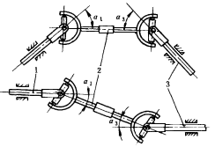
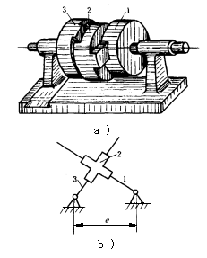
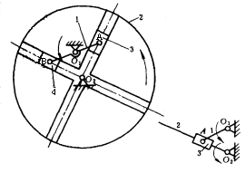

机构示意图
机构特性简介

����单万向联轴器为不等速传动，瞬时传动比是变化的，但图中所示双万向联轴器可以实现等速传动，其条件为： ①主动轴l与中间轴2的夹角α1必须等于从动轴3与中间轴的夹角α3，即α1=α3。 ②中间轴2两端的轴叉必须位于同一平面内。 ����一般主动轴与从动轴的轴线在传动中不重合或成一定的角度，均可采用万向联轴器，而双万向联轴器可实现多速传动，传动比i13=1，它广泛用于汽车、多头钻等机械上。

����图a所示十字槽联轴器由主动盘1、中间盘2和从动盘3组成。主动盘1的凹槽带动中间盘2右侧的嵌入凸肩，中间盘2的左侧 凹槽与右侧凸肩相互垂直，左侧凹槽驱动从动盘3上的嵌入凸肩，使从动盘3作同向转动。 ����十字槽联轴器常用于偏距e不太大，或两轴线不易重合的平行轴的联接传动。图b为机构简图。

����图中所示转动导杆机构 的主动杆1绕固定轴O1转动，它的两端以铰链A、B连接滑块3、4，并带动滑块在从动盘2的垂直导槽内滑动，同时驱动从动盘绕固定轴O2同向匀速转动， 尺寸条件为O 1 O 2 =O 1 B=O 1 A 传动比i 12 =n 1 /n 2 =2